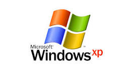
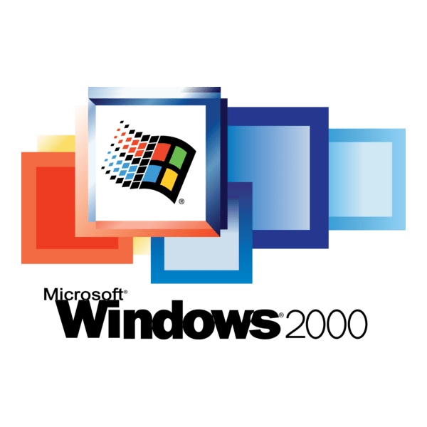
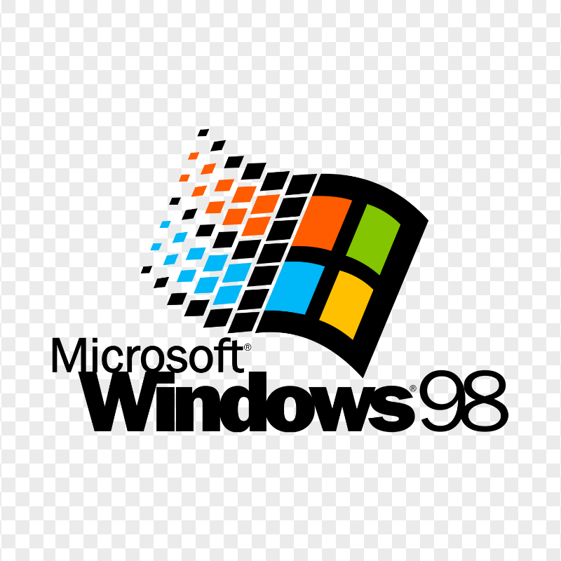
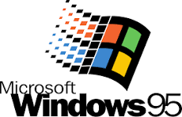

Windows ISO Museum
Toutes les versions de Windows au même endroit
Windows Modernes
 Windows 10 x32
Windows 10 x32
Toutes les versions de Windows au même endroit
Windows 10 x32
 Windows 7 x32
Windows 7 x32

Windows XP x64 Télécharger
Windows 2000 x32 Télécharger
Windows 98 SE x32 Télécharger
Windows 95 x32 Télécharger